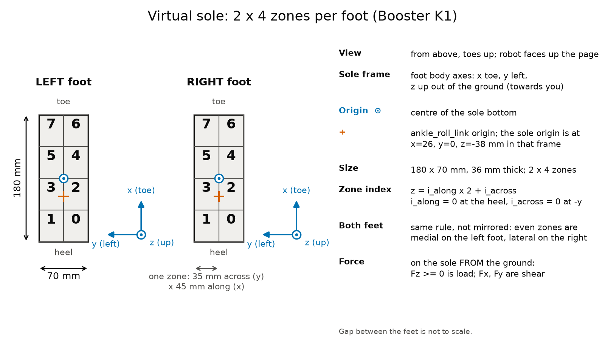
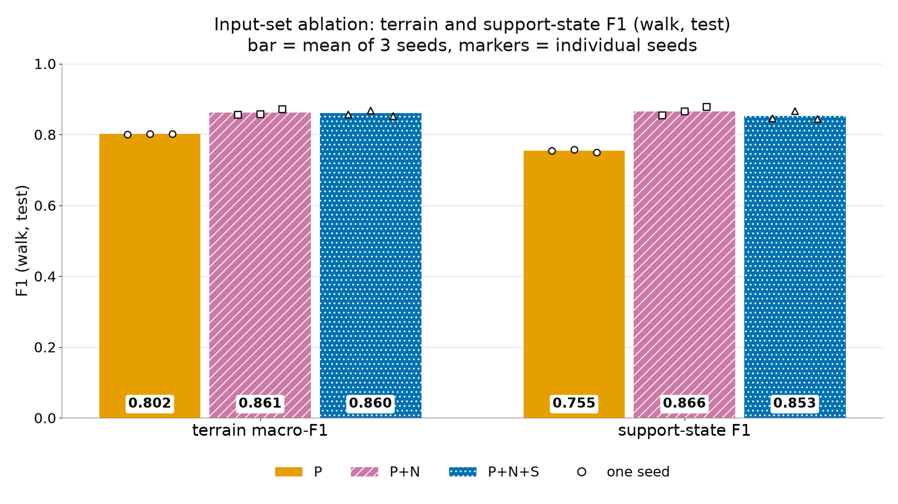
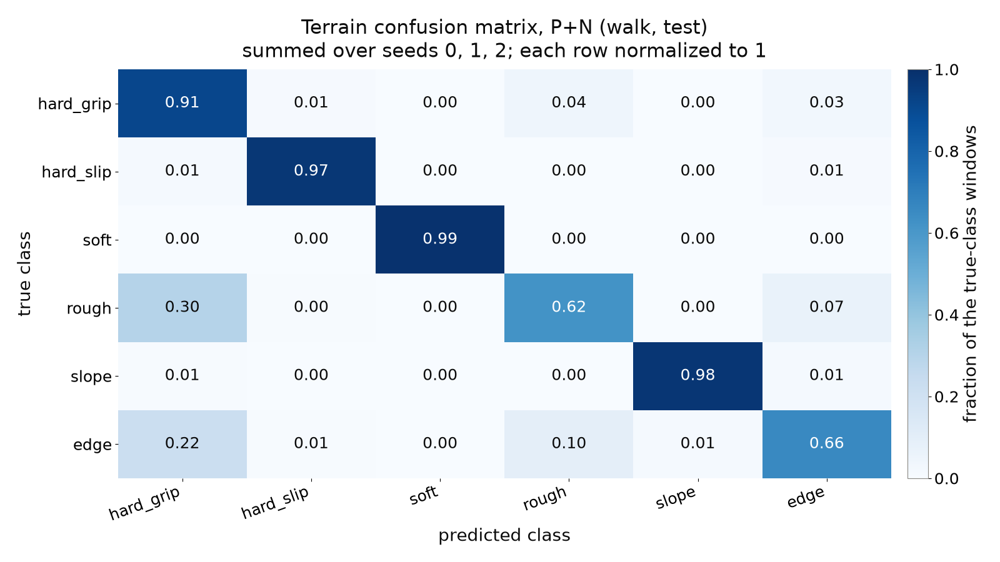
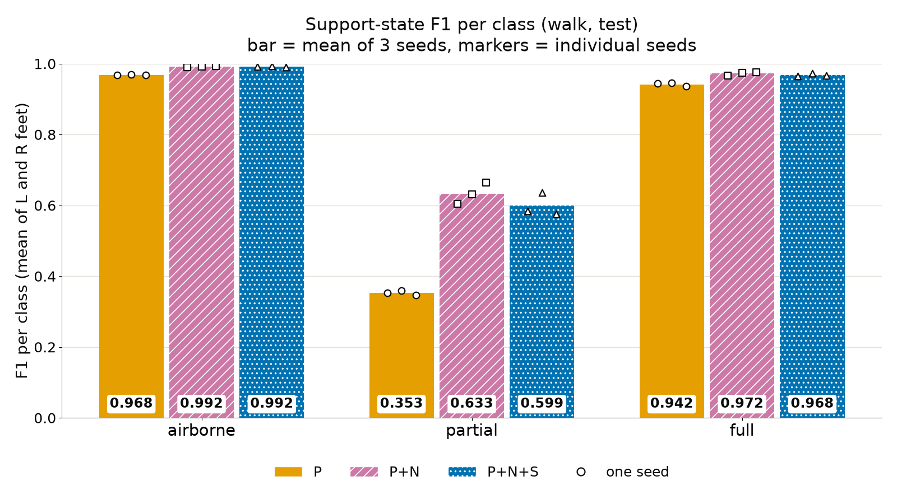
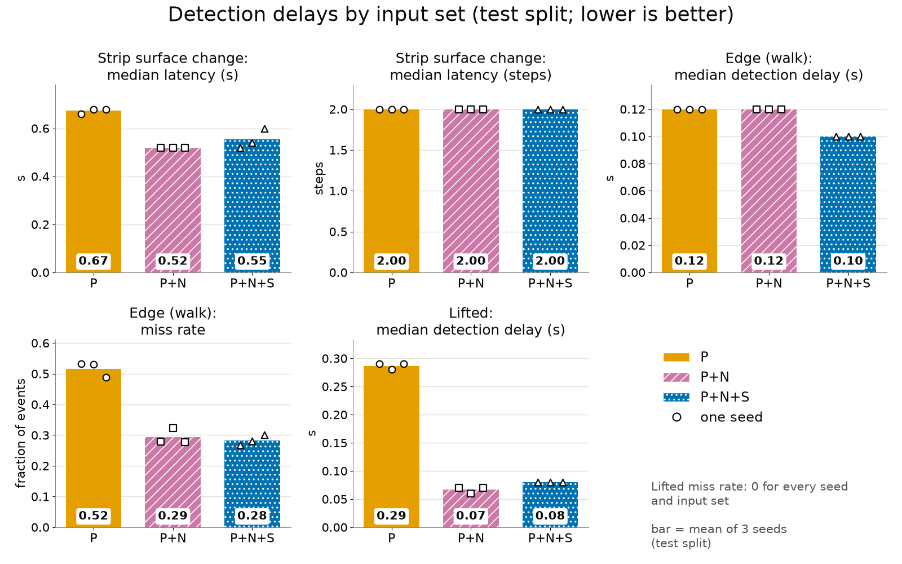
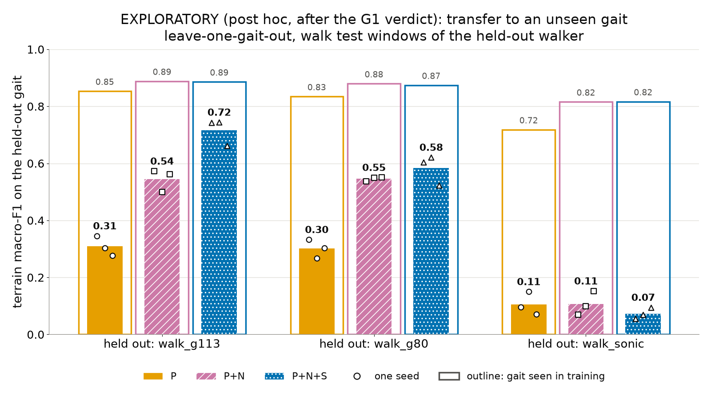

Terrain from Touch: the first simulation run
Does shear sensing in a humanoid's sole add anything to joints, IMU and normal pressure? A virtual sole with eight zones per foot on the Booster K1 in MuJoCo, three gaits, six terrains, and a pass/fail gate fixed before the data existed. The gate was not met.
In short
- The gate was not met: 0 of 3 criteria. Adding shear to joints, IMU and zone pressure reached none of the thresholds fixed in advance.
- Shear did lower the friction error in all three seeds: −10 % pooled, −18 % on slippery hard floor, −23 % on the foot rig. It did not improve terrain classification, support-state detection or detection speed.
- Joints and IMU alone nearly solve grip against slip: 0.948, and 0.975 with zone pressure, so the +5 points the gate asked for were out of reach.
- Zone pressure is what helps. Terrain 0.802 → 0.861; partial support 0.353 → 0.633; a lifted robot noticed in 0.07 s instead of 0.29 s.
- The largest effect is the gait. Models trained without a gait lose much of their score on it, and nothing transfers to human-like walking. On one held-out gait shear was worth +17 points: a hypothesis, not a result.
- The simulator is the weakest link. A rigid-body solver has no elastomer and no partial slip, so "no" here does not mean "no" on the real sole.
The gate and the verdict
Three inputs are compared throughout. P: joints, IMU and the walking command. P+N: plus the normal force on each of the sole's eight zones per foot. P+N+S: plus the shear force (Fx, Fy) on each zone. The gate asked whether P+N+S beats P+N on walking test data, over three seeds, by fixed margins. Every metric and the gate were defined in a protocol written before the dataset existed.
| Gate criterion (P+N+S against P+N) | P+N | P+N+S | Result | Needed |
|---|---|---|---|---|
| 1. Hard-grip against hard-slip F1 | 0.975 ± 0.004 | 0.972 ± 0.008 | −0.3 points | ≥ +5 points |
| 2. Surface change detected earlier (median steps) | 2.00 | 2.00 | 0 steps (0.52 s vs 0.55 s) | ≥ 1 step |
| 3. Friction error (MAE) | 0.166 ± 0.006 | 0.150 ± 0.003 | −10 % | ≥ −20 % |
Reading the table. None of the three criteria passed. Three things qualify the verdict. This is the primary test, on walking data with three different gaits (two velocity policies and SONIC, human-like heel-to-toe walking). Joints and IMU alone nearly solve the comparison shear was expected to win: P reaches 0.948 on grip against slip and P+N 0.975, so the most P+N+S could have gained was +2.5 points against the +5 required. And the simulator is the weakest link: a rigid-body solver has no elastomer, no partial slip inside the contact patch, and splits force across zones by a numerical regulariser. The result says shear did not pass the gate in this simulation, not that it will not help on the real sole.
Setup
Robot and sole
The Booster K1, 22 degrees of freedom, 19.7 kg (weight 192.9 N), in MuJoCo 4.0.1 on CPU. MuJoCo was chosen because trained K1 policies already replay in it and it exposes the full 3D force of each contact. Each foot's collision box is replaced by 2 × 4 boxes tiling the same footprint with the same contact parameters; mass, joints and actuators are unchanged. A zone's force is the sum of the contact forces on its box, rotated into the sole frame (x toe, y left, z up; Fz ≥ 0 is load).
Sensor model: mean over physics steps per 1/150 s, a per-episode gain (3 %) and offset (0.1 N), noise 0.15 N in shear and 0.25 N in normal force, 0.05 N quantisation, then the mean of 3 samples to 50 Hz. The noise values are placeholders: the real sole's noise is not known.

Sanity checks
| Check | Result |
|---|---|
| Sliding box, |Ft| / Fn against set friction 0.3 / 0.6 / 0.9 (0.2 m/s) | 0.300 / 0.600 / 0.900 (tolerance 10 %) |
| Standing: sum of Fz over both feet | 192.92 N = m·g, error +0.000 % (tolerance 2 %) |
| Single-leg stance | stance foot −0.02 % of m·g, swing foot 0 N, centre of pressure (+18, +3) mm inside the ±90 × ±35 mm sole |
| Foot dragged at friction 0.3 / 0.6 / 0.9 (foot-only rig) | shear / Fz 0.300 / 0.600 / 0.900 |
| Standing on a 5° / 10° slope | shear / Fz within 0.1 % of tan θ |
| Swing / lifted | exactly 0 N |
Reading the table. The virtual sole measures the physics the simulator produces: friction ratios, body weight and slope angle come out exactly, and a foot in the air reads zero. All checks passed (6 of 6 for the sole), and an independent verification re-ran them. This shows the sensor model is wired correctly; it does not show the simulated contact is realistic.
Terrains
- hard-grip (friction 0.7–1.3), hard-slip (0.08–0.36), soft (8–108 kN/m), rough (rigid bumps: maximum height per episode 0.5–2 cm, individual bumps 0.25–2 cm), slope (5–10°, random direction), edge (plank fields with gaps, and low platforms).
- Strips where one surface changes to another (grip→slip, slip→grip, grip→soft, grip→rough), and a lifted mode (whole episode, and lifted mid-walk).
- Friction and stiffness are drawn from separate bands per split. The test split has one band inside the training span (test-in) and one outside it (test-out).
Motion sources
No policy was trained for this run; working policies already existed.
| Source | What it is | Flat hard-grip | Gait |
|---|---|---|---|
| G113 | velocity policy, ordinary flat-foot walking | 0/64 falls | 2.07 steps/s |
| G80 | velocity policy, ordinary flat-foot walking | 0/64 falls | 2.37 steps/s |
| SONIC | motion tracking of 291 human walking clips, heel-to-toe | 0/32 falls | 1.4 steps/s |
| Stand | scripted weight shifts, squats, ankle rolls under PD control | – | – |
| Rig | foot-only rig: random load, tilt, sliding speed, overhang | – | – |
Reading the table. All three walkers are stable on flat ground. The fall counts for G113 and G80 come from an independent evaluation on the plain K1 model, before the sole was added; with the sole both again had 0/16. In the dataset itself, hard-grip walking ended in a fall in 0/180 (G113), 0/180 (G80) and 5/180 (SONIC) episodes.
Data and models
- Dataset. 4,572 episodes of 20 s, 24.7 h at 50 Hz, 1.2 GB: walking 17.4 h plus strips 2.7 h, stand 1.8 h, rig 1.5 h, lifted 1.3 h. Split by terrain instance: 3,100 / 452 / 1,020 episodes. 235 episodes end in a fall (5.1 %); frames after a fall are labelled −1. The validator found 0 bad episodes of 4,572.
- Models. Windows of 1.0 s, stride 0.2 s (290 k / 43 k / 93 k windows). A causal dilated 1D-CNN (177 k parameters for P, slightly more with sole channels) with heads for terrain class, properties (friction, log stiffness, slope) and support state per foot; the label is the last frame of the window; epoch chosen on validation; 3 seeds. LightGBM on hand-made features is the classical baseline.
Results by input
Walking, test split, mean ± sd over 3 seeds; LightGBM is a single run.
| Input | Terrain macro-F1 | Friction MAE | log10 stiffness MAE | Support-state F1 |
|---|---|---|---|---|
| P (joints, IMU, command) | 0.802 ± 0.001 | 0.186 ± 0.008 | 0.187 ± 0.004 | 0.755 ± 0.003 |
| P+N (+ Fz per zone) | 0.861 ± 0.007 | 0.166 ± 0.006 | 0.145 ± 0.015 | 0.866 ± 0.010 |
| P+N+S (+ Fx, Fy per zone) | 0.860 ± 0.006 | 0.150 ± 0.003 | 0.141 ± 0.011 | 0.853 ± 0.010 |
| LightGBM P / P+N / P+N+S | 0.730 / 0.826 / 0.841 | 0.232 / 0.212 / 0.162 | 0.358 / 0.110 / 0.104 | 0.674 / 0.758 / 0.761 |
Reading the table. Zone pressure is the step up: terrain from 0.802 to 0.861 and support state from 0.755 to 0.866. Shear adds nothing to either and lowers the friction error from 0.166 to 0.150. The CNN beats LightGBM on every score except stiffness with sole data, where LightGBM's hand features do slightly better.

Confusions
With every input the largest errors are rough predicted as hard-grip (about 30 % of rough windows) and edge predicted as hard-grip (34 % with P, 22 % with P+N, 19 % with P+N+S); then edge predicted as rough (10–14 %) and hard-grip predicted as rough (5–7 %). Soft, slope and hard-slip are recognised in more than 95 % of windows by P+N. A likely contributor to the rough and edge errors, which nothing here measures, is the labelling: a foot that lands between bumps, or fully on a plank, is physically on flat grippy ground but carries the rough or edge label.

Support state and detection delays
Support state per foot: in the air, partly supported (for example on an edge), or fully down.
| Input | Airborne | Partial | Full |
|---|---|---|---|
| P | 0.968 | 0.353 | 0.942 |
| P+N | 0.992 | 0.633 | 0.972 |
| P+N+S | 0.992 | 0.599 | 0.968 |
Reading the table. Partial support is the hard class and the one that matters when a robot steps off a stage. Zone pressure nearly doubles its F1. Adding shear does not improve it: 0.599 against 0.633, a drop of a little over one standard deviation across seeds.
| Input | Surface change: s / steps (median) | Edge: delay s / missed | Lifted: delay s / missed |
|---|---|---|---|
| P | 0.67 / 2 | 0.12 / 52 % | 0.29 / 0 % |
| P+N | 0.52 / 2 | 0.12 / 29 % | 0.07 / 0 % |
| P+N+S | 0.55 / 2 | 0.10 / 28 % | 0.08 / 0 % |
Reading the table. Being lifted is detected in every episode, four times faster with normal force. A partial-support touchdown is still missed in 28–29 % of cases with the sole. By strip type, grip→slip is detected on the first step by P+N (median 1.0) and slip→grip takes about 4 steps for every input.


Standing, rig and lifted
| Mode | Input | Terrain F1 | Friction MAE | Support F1 (classes present) |
|---|---|---|---|---|
| Stand | P / P+N / P+N+S | 0.534 / 0.714 / 0.701 | 0.330 / 0.209 / 0.211 | 0.487 / 0.729 / 0.727 |
| Rig | P / P+N / P+N+S | 0.084 / 0.466 / 0.508 | 0.359 / 0.302 / 0.232 | 0.303 / 0.736 / 0.700 |
| Lifted | P / P+N / P+N+S | 0.710 / 0.821 / 0.821 | 0.212 / 0.182 / 0.168 | 0.714 / 0.882 / 0.870 |
Reading the table. Without walking, joints and IMU say much less, and the sole matters more. The foot rig is the only mode where shear clearly helps a property: friction MAE drops 23 % (0.302 → 0.232). That is the case where the foot is deliberately slid.
Do joints and IMU alone solve the task?
No, but they do a large part of it. P alone gives 0.80 terrain macro-F1, 0.948 on grip against slip, and detects lifting in 0.29 s. It fails on partial support (F1 0.35) and misses half of the edge touchdowns.
A probe that predicts the sole from joints and IMU (2 seeds) explains why. On hard-grip, a GRU reconstructs the foot's total Fz, total shear and centre of pressure with stance R² 0.93–0.95 (centre-of-pressure error 4 mm), and per-zone shear with 0.85. On hard-slip that drops to 0.63–0.80, and per-zone shear is the least predictable signal (R² 0.70). The shear that joints and IMU cannot explain is about twice as large on the slippery floor (RMS 15.1 N against 7.2 N).
For terrain the gain from normal force comes from the zone pattern, not the load: per-foot totals (P+Ntot) score the same as P (0.800 against 0.802), while zones give 0.861. For the airborne state totals are enough: they take lifted detection from 0.29 s to 0.06 s and airborne F1 from 0.968 to 0.990.
Why shear did not pass, as far as the evidence goes
Items marked exploratory were run after the gate result was known. They explain; they do not enter the gate.
- A ceiling on criterion 1. P already gets 0.948 and P+N 0.975 on grip against slip: when a foot slides, the joints and IMU show it. With P+N at 0.975 the largest possible gain was +2.5 points, so no added sensor could have met the +5 threshold.
- Criterion 2 is at its floor, and too coarse. With a 0.2 s stride and a two-window confirmation, the minimum is one step by definition (the first touchdown on the new surface counts) and two is typical; P+N already detects grip→slip on the first step. Every run's median is exactly 2.0. In seconds shear is not faster either (0.55 s against 0.52 s). This is a limit of the criterion as defined in advance; it was kept.
- Friction is observable only at the friction limit. Against true foot slip in a separate diagnostic set (done before the gate result was known): at friction ≤ 0.2 at least 92 % of steps reach the limit; at 0.4, 65–76 %; at 0.9, 1–12 %. Criterion 3 pools all classes, and most windows are on grippy ground (0.7–1.3), where this 50 Hz zone-averaged sensor rarely shows the limit: real touchdown skids of 9–26 mm per step exist even at 0.9, but a saturation test on the sensor signal catches only 30–47 % of real slides. On hard-grip every model is close to the trivial "predict the class mean" reference (0.156–0.209 against 0.214; exploratory breakdown).
- Where friction is observable, shear helps more, but unevenly. The secondary number defined in advance, hard-grip plus hard-slip only: MAE 0.141 → 0.121 (−14 %). Exploratory breakdown: hard-slip only 0.076 → 0.062 (−18 %); the test-in slip band (friction 0.285–0.295) 0.076 → 0.052 (−32 %), although there the trivial class-mean reference (0.044) beats every model; the test-out slip band (0.08–0.12) 0.077 → 0.075 (−3 %). So friction within a class is barely recovered, and most of the gain comes from getting the class right. The gain is also not robust: with the command channels removed (one seed, section 9) the order reverses.
- The CNN may use shear poorly for friction. Friction needs a ratio of two inputs. The LightGBM baseline (planned in advance, single run), which has shear / normal as a hand feature, shows −24 % (0.212 → 0.162). Taken alone that would pass the 20 % threshold, but the gate is defined on the 3-seed CNN, whose P+N (0.166) is already about as good as LightGBM's P+N+S. Exploratory: giving the CNN explicit ratio channels (P+N+S+U, selected on validation, 3 seeds) gives 0.138, −17 % against P+N: closer, still under the threshold, and after the fact.
- The simulated contact is not what a shear-sensing sole measures. Each zone is a rigid box with four corner contacts; how load and shear are split between zones is set by the solver's soft-constraint regularisation, not by elastomer mechanics. Only the per-foot totals are physically trustworthy, and totals are what joints and IMU already predict. There is no partial slip at the edge of the contact patch (the signal real shear sensors use to detect slip before it happens), no stick-slip, no surface texture. This may understate shear; that is an interpretation, not a measurement.
- Friction-model artefacts. MuJoCo's friction is regularised: below about 0.05 m/s of slip it under-reports (friction 0.9 reads 0.835), and sliding makes the normal force chatter at about 60 Hz. A control with low-passed Fz (P+N_lp) scores the same as P+N (0.864 against 0.861; grip/slip 0.974 against 0.975), so the chatter is not needed for the result. This does not prove the unfiltered model ignores it.
- No friction between 0.36 and 0.7 was sampled. The class definition leaves a gap. There the foot would slide less often and joints and IMU might lose their cue; this run cannot say.
A gait the model has not seen
Exploratory, 3 seeds, large spread: train on two gaits, test on the third.
| Held-out gait | P | P+N | P+N+S | Same gait seen in training |
|---|---|---|---|---|
| G113 | 0.31 | 0.54 ± 0.03 | 0.72 ± 0.04 | 0.85–0.89 |
| G80 | 0.30 | 0.55 ± 0.01 | 0.58 ± 0.04 | 0.83–0.88 |
| SONIC | 0.11 | 0.11 | 0.07 | 0.72–0.82 |
Reading the table. The models are strongly gait-specific. Nothing transfers to SONIC (0.07–0.11, the same as the label-shuffle control's 0.09: no information). On a held-out velocity policy the loss is 53–54 points with P, 33–34 with P+N, and 17 (G113) or 29 (G80) with P+N+S. For the real robot this matters more than the shear question: the training data must contain the controller that will be running. On one of the three hold-outs shear is worth +17 points, far more than its effect on known gaits. That is one case with a seed spread of ±0.04, not defined in advance, so it is a hypothesis: shear may buy robustness to a change of gait rather than accuracy on a known gait.

Integrity checks
| Check | Result |
|---|---|
| Leakage: terrain instances, parameter bands and actual friction and stiffness values per split | none shared (two independent implementations) |
| Independent recomputation of macro-F1, grip/slip F1, friction MAE and strip latency from raw episodes and saved predictions, without the evaluation code | difference 0.0000 on all six runs; latency in steps identical |
| Label-shuffle control (P+N+S, labels permuted across training episodes) | test macro-F1 0.091, at chance |
| Trivial shortcuts (episode length, commands, start pose → class) | macro-F1 0.15 against 0.10 chance |
| Command channels removed (seed 0 only) | terrain F1 changes by at most 0.003, grip/slip F1 by up to 0.015. Friction MAE moves 0.015–0.020 in opposite directions for the two inputs, which on this one seed reverses criterion 3 (P+N 0.155, P+N+S 0.166) |
| Second full run from a clean copy | largest difference on headline numbers 0.0000 (training is deterministic) |
Reading the table. No leak, no shortcut, and the numbers reproduce exactly; an independent verification reproduced all headline numbers with a largest difference of 0.0000. No threshold or tolerance was changed and every seed is reported. The one fragile result is criterion 3 itself, which reverses on one seed when the command inputs are removed.
Approximations and what was not done
- Zone-level force and shear are a solver artefact (section 7, item 6). Sensor noise values are placeholders. Per-zone saturation (300 N normal, 150 N shear) is modelled and affects 0.04 % of walking frames.
- Standing uses ankle gains × 4 and ankle balance feedback, because the walking policy's PD gains cannot hold the K1 upright under plain PD. Rig episodes use a foot-only rig; a whole-robot rig tipped the feet 20–30° and was dropped.
- Tilted foot. In the sole frame, shear / Fz exceeds friction at heel strike and toe-off (99th percentile 0.36 at friction 0.2) because the foot is tilted about 10°; shear / Fz ≈ friction holds only for a flat foot.
- Data losses. SONIC falls on low platforms in 55 of 90 episodes; G80 falls on hard-slip in 54 of 180 (23 in the test-out band 0.08–0.12, 26 in the lowest training band 0.14–0.19, 5 elsewhere); 21 of 504 strip episodes never reach the new surface; 5 SONIC episodes fall at spawn on cross-slopes; 38 of 678 edge episodes have no partial-support frame. All are kept up to the fall and flagged.
- Not done: a shear test in Isaac Lab / PhysX; sand, gravel, grass and mud (out of scope); a compliant-sole contact model; friction between 0.36 and 0.7; a second model architecture; anything on real hardware.
- Cost of a run. Generating the dataset takes about 12 minutes on 40 CPU cores; the full results pipeline about 46 minutes on one H100, of which CNN training is 19.
Next steps
- Decide what the real-sole test should measure before collecting data. Grip against slip is close to solved without the sole in this simulation; partial support and early slip are where a sole has room. Re-state the gate around partial-support detection, slip onset before the foot has moved, and transfer to an unseen gait.
- Record the real K1 with the controller that will actually run, and with more than one: the gait dependence is the largest effect in this report.
- If simulation is used further for the shear question, replace the rigid sole with a compliant one (many small soft pads, or a finite-element or soft-contact model) so that zone distribution and partial slip mean something. Without that, more simulated data will keep answering "no" for a reason unrelated to the real sensor.
- Fill the friction gap (0.36–0.7) and test the unseen-gait hypothesis properly: defined in advance, more seeds, more gaits.
Scores are on walking test windows (1.0 s, label at the last frame), mean ± sd over 3 seeds unless marked single run: macro-F1 for terrain class over six terrains, F1 for support state, mean absolute error for friction and log10 stiffness. Related: step 1, second simulation run, step 1, sensor-layout check, support state, the simulated sole up close, step 1 summary.